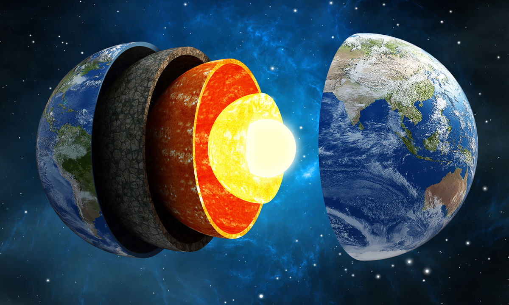

ZEM
Zem je v poradí tretia planéta slnečnej sústavy. Je to zároveň jediná planéta, na ktorej je podľa súčasných vedeckých poznatkov voda v kvapalnom skupenstve a život.
V strede Zeme sa nachádza horúce husté jadro, ktoré obklopuje chladnejší plášť z roztavených hornín. Na povrchu je kôra, ktorá dosahuje rôznu hrúbku v závislosti od miesta (pod oceánmi je všeobecne tenšia ako pod kontinentmi). Vďaka pevnému povrchu a vnútornému zloženiu Zem zaraďujeme medzi terestriálne planéty. Zem je najväčšia spomedzi terestriálnych planét slnečnej sústavy a tiež jediná známa planéta, na ktorej sa nachádza voda vo všetkých troch skupenstvách. Väčšina jej povrchu je pokrytá kvapalným oceánom, čo jej pri pohľade zo vzdialeného vesmíru dáva charakteristickú modrú farbu. Zem je obklopená atmosférou, ktorá vo veľkých vzdialenostiach od povrchu pozvoľna prechádza do medziplanetárneho prostredia.
Vznik
Zem vznikla približne pred 4,57 miliardami rokov pravdepodobne sformovaním sa z protoplanetárneho disku. Povrch Zeme neustále pretvárajú geologické procesy, napríklad platňová tektonika, ktorá pomaly mení polohy a tvar kontinentov. Veľkú zásluhu na dnešnej podobe Zeme majú aj živé organizmy, ktoré utvárajú biosféru. Počas dlhých miliárd rokov na Zemi vytvorili dýchateľnú atmosféru a pôdu.
Fyzikálne vlastnosti
Zem je takmer guľaté teleso. Má tvar geoidu (grécky geoidés = podobný Zemi), ku ktorému sa najviac približuje tvar rotačného elipsoidu. Odstredivá sila rotácie spôsobila, že Zem je na póloch sploštená. Z tohto dôvodu je rovníkový priemer Zeme, 12 756,284 km o 42,77 km väčší ako jej polárny priemer. Zem má 4,5 miliardy rokov.
Hodnota hustoty Zeme 5 515 kg/m3 je najväčšia zo všetkých planét slnečnej sústavy. Dôvodom je čiastočne to, že Zem je najhmotnejšou pevnou planétou, akú poznáme, a gravitácia stlačila materiál v jej vnútri do menšieho objemu.
Dráha
Zem obieha okolo Slnka v strednej vzdialenosti 149,6 miliónov km priemernou rýchlosťou 29,8 km/s. Stredná vzdialenosť Zeme od Slnka sa stala jednou zo základných astronomických jednotiek dĺžky a označuje sa ako astronomická jednotka (skratka AJ alebo AU z anglického Astronomical Unit). V najvzdialenejšom bode svojej dráhy, v aféliu (doslní), je Zem od Slnka vzdialená 152 098 704 km, v najbližšom bode svojej dráhy, v perihéliu (príslní) 147 097 149 km.Jej priemerná obežná rýchlosť je 29,79 km/s.
Doba obehu Zeme okolo Slnka sa stala jednou zo základných jednotiek času a nazývame ju rok. Obeh Zeme okolo Slnka sa však môže vzťahovať na rôzne body alebo telesá, podľa čoho rozlišujeme niekoľko typov obehov, ktorých dĺžky sa od seba nepatrne líšia. Poznáme rok siderický, tropický a anomalistický. Tropický rok, ktorý je základom kalendárneho roku má dĺžku 365 dní, 5 hodín, 48 minút a 45,4 sekúnd. Priemerná rovina, v ktorej obieha Zem okolo Slnka sa nazýva ekliptika.
Obývateľnosť
Prítomnosť veľkého množstva živých organizmov na Zemi je zjavná už z vesmíru. Poukazujú na to obrovské zalesnené plochy, vystupujúce koralové útesy a v neposlednom rade aj veľké množstvo kyslíka v zemskej atmosfére, ktorý sa tam dostal ako produkt niekoľkých miliárd rokov fotosyntézy siníc a rastlín.Ako jediná známa planéta, na ktorej sa vyvinul a pretrval život sa Zem stala prototypom obývateľnej planéty. Vzdialenosť Zeme od Slnka, prítomnosť atmosféry a jej vhodné chemické zloženie umožňujú, aby sa na väčšine jej povrchu udržala voda v kvapalnom skupenstve. Tým je splnená základná podmienka, ktorú podľa súčasných predstáv potrebuje život na svoj vznik. Od svojho vzniku obývajú živé organizmy túto planétu už asi 3,8 miliardy rokov, čo predstavuje dve tretiny jej histórie
V súčasnosti je Zem obývaná podľa odhadov rádovo 1033 jednotlivých živých organizmov, ktoré sa patria do vyše 1,5 milióna druhov. Formy života sú rozmanité od najjednoduchších bezjadrových mikroskopických jednobunkovcov (prokaryotov) cez väčšie jednobunkové prvoky s jadrom, riasy, rastliny, huby a živočíchy. Súčasné druhy však pravdepodobne predstavujú len zlomok všetkých druhov, ktoré sa na Zemi vyskytovali v minulosti. Živé organizmy obývajú celý povrch Zeme, určitú vrstvu pod povrchom a spodné časti jej atmosféry. Nachádzajú sa aj na tých (z hľadiska človeka) najextrémnejších stanovištiach: v hlbinách oceánskych priekop bez slnečného svetla a tepla, kde je všetko vystavené obrovskému hydrostatickému tlaku, v horúcich sírnych prameňoch, v Antarktickom ľade, v najsuchších púšťach aj v oblastiach bez dýchateľného kyslíka. Oblasť Zeme obývaná živými organizmami sa nazýva biosféra.
Zem je tiež domovskou planétou ľudstva, ktoré žije v približne 200 nezávislých štátoch. K aprílu 2014 žilo na Zemi približne 7 158 138 650 ľudí. Časť povrchu Zeme, ktorá je obývaná alebo zreteľne pozmenená človekom, sa nazýva noosféra.